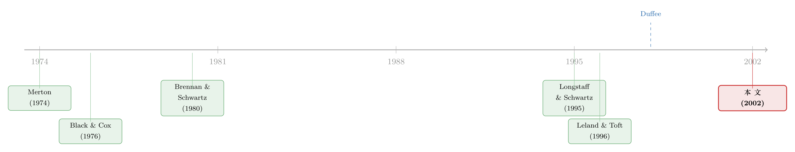

一张「期权」三种戴法：当公司债的赎回与违约，被装进同一个执行边界
本文读的是 Acharya & Carpenter (2002, Review of Financial Studies)：把可赎回、可违约的公司债，统一看成「一只无风险母债 (host bond) 减去一份写在母债上的看涨期权」——三种债的差别仅仅在期权的执行价。利率随机、违约时点内生，这是第一个同时容纳「随机利率 + 内生破产」的附息公司债模型。它最漂亮的结论是：内生与外生破产模型可以校准到同样的价格，对冲含义却南辕北辙；而真实数据里利差对利率的反应，更像内生模型说的那样。
1 一个被定价掩盖的裂缝
先抛一个问题。你手上有两个公司债定价模型，喂进同样的参数，吐出来的债券价格分毫不差——它们对市场是「等价」的吗？
直觉会说：价格一样，那当然等价。但这篇论文要告诉你的，恰恰是这个直觉的破绽。两个模型可以在「价格」这一层握手言和，却在「价格对利率、对公司价值怎么动」这一层彻底分道扬镳。而后者，正是任何一个真要拿这些债去对冲的人，每天都要面对的东西。
裂缝出在哪里？出在「公司什么时候违约」这个假设上。
绝大多数能装下随机利率的公司债模型，为了让数学走得通，都偷偷塞进了一条外生的违约规则——比如「公司价值跌到某个固定门槛就违约」。这条规则是手工钉死的，不是公司自己算出来的。Acharya 和 Carpenter 不干，他们让发行人按自己的利益、在最优的时点去选择赎回或违约——也就是内生破产 (endogenous bankruptcy)。再把随机利率叠上去。
据作者所说，这是第一个同时具备「随机利率」与「内生破产」的附息公司债模型。在它之前，文献要么把利率钉成常数（好专心研究股东的策略博弈），要么保留随机利率但把违约规则外生化。两头不可兼得。
为什么非要同时要这两样？因为公司债投资者的真实处境，就是利率风险和信用风险搅在一起同时管。利差会随利率水平、利率波动、利率与公司价值的相关性而动；它也对「破产到底怎么发生」这个假设极其敏感——敏感到某些外生设定竟会算出负的利差。把任何一头简化掉，对冲就会算错。
2 核心的一招：所有债，都是「母债减一份看涨」
这篇论文真正的发动机，是一个统一的视角。把它吃透，后面所有结论都会顺流而下。
考虑一家公司，只发了一只附息债，息票连续支付为 c，到期 T，面值归一。作者同时建模三只债：纯可赎回债 (pure callable)、纯可违约债 (pure defaultable)、以及又可赎回又可违约的债 (callable defaultable)。
关键的一招是：把这三只债，都写成同一只无风险母债，减去一份写在母债上的看涨期权。母债 P 就是同息票、同期限的无风险无赎回债。三只债的差别，只在那份期权的执行价：
- 纯可赎回债：发行人手里握的是「赎回权」，执行价 = 赎回价
k，行权收益P - k； - 纯可违约债：股东手里握的是「违约权」（用公司换回债），执行价 = 公司价值
V，行权收益P - V； - 可赎回可违约债：发行人握的是「停止还债权」，要么花
k赎回、要么交出价值V的公司，执行价取两者较小者k∧V，行权收益P - k∧V。
你看，三只债的故事，被压缩成了一个执行价的差异。这就是全文的支点。
接着，一个自然的问题是：发行人什么时候行权？这正是「内生」二字的含义。行权时点是一个停时 (stopping time)，发行人选它来最大化自己手里那份期权的价值（等价地，最小化债的价值）。在时刻 t，这份期权的最优价值是：
其中执行价 \(\Phi(v,t)=k\)、\(v\)、或 \(k\wedge v\)，分别对应三只债；停时 \(\tau\) 在所有 \(t\le\tau\le T\) 上取上确界。这个 sup（上确界）就是「内生」——边界不是钉死的，是优化出来的。
用这一招，许多看似复杂的现象瞬间变得透明。比如「利差为什么会随利率上升而收窄」——这是 Duffee (1998) 在数据里反复看到的。在这套视角下，答案只有一句话：利率上升 → 母债价格 P 下跌 → 期权（标的是 P）的价值下跌 → 利差收窄。注意，这条逻辑对所有债都成立，不只是可赎回债。可赎回债、可违约债，在这里被一视同仁地当成了看涨期权。这种「把违约权当赎回权来处理」的统一，正是论文反复强调的洞见。
这跟 Longstaff & Schwartz (1995) 那条「利差随利率收窄」的机制不一样。在他们的外生模型里，利率上升抬高了公司价值在风险中性测度下的漂移，降低了违约概率，于是利差收窄；但 P 本身下跌反而可能拓宽利差（因为它压低了违约时债权人能拿到的那份母债价值）。本文里，P 下跌是收窄利差的主力。同一个经验现象，两套机制——这正是「价格相同、对冲不同」的伏笔。
3 母债的价格与期权的「德尔塔不等式」
模型的市场设定干净利落。存在一个等价鞅测度 \(\mathbb{Q}\)，所有资产的期望回报率等于即期利率 \(r_t\)。利率是一个非负的单因子扩散：
$$ dr_t \;=\; \mu(r_t,t)\,dt \;+\; \sigma(r_t,t)\,dZ^{\mathbb{Q}}_t, $$
其中 \(\mu\)、\(\sigma\) 满足 Lipschitz 与线性增长条件（保证解存在唯一）。公司价值 \(V\) 独立于资本结构，服从
$$ \frac{dV_t}{V_t} \;=\; (r_t-\delta)\,dt \;+\; \sigma\,dW^{\mathbb{Q}}_t,\qquad d\langle W^{\mathbb{Q}},Z^{\mathbb{Q}}\rangle_t=\rho\,dt, $$
\(\delta\ge 0\) 是派现率，\(\rho\in(-1,1)\) 是利率与公司价值的瞬时相关系数。债务契约禁止股东更改 \(\delta\) 或 \(\sigma\)。
母债价格则是无风险现金流的贴现期望：
$$ P_t \;=\; E^{\mathbb{Q}}\!\left[\int_t^T c\,\zeta_{t,s}\,ds \;+\; \zeta_{t,T}\,\Big|\,\mathcal{F}_t\right]\;=\;p_H(r_t,t), $$
这里关键的一步是：在单因子马尔可夫利率下，\(p_H(\cdot,t)\) 关于 \(r\) 严格递减且连续，因而有连续的逆。这条性质，加上公司价值的设定，让作者得以援引 Krylov (1980) 的定理，把期权价值写成 \(\Pi_t = f(P_t, V_t, t)\)——也就是说，期权价值只通过母债价格 P 和公司价值 V 这两个状态变量起作用。状态空间从「利率」换成了「母债价格」，这正是统一视角能成立的技术基石。
于是债的价格就是
$$ p_X(p,v,t) \;=\; p \;-\; f_X(p,v,t),\qquad X\in\{C,\,D,\,CD\}, $$
下标 C 是纯可赎回、D 是纯可违约、CD 是可赎回可违约。
然后是论文的第一个分析结果——德尔塔不等式 (delta inequalities)（Theorem 1，证明思路取自 Jacka 1991）。它说，对三种期权都成立：
- 期权价值关于母债价格
p递增，但增速被1卡住（像普通看涨的 delta 落在[0,1]）； - 可违约债的期权价值关于公司价值
v递减，但减速被-1卡住（像普通看跌的 delta 落在[-1,0]）。
这两条卡死在 ±1 的界，含义很实在：债价对母债、对公司价值都是递增的，增速不超过 1。于是债的有效久期 (effective duration)——母债收益率下降一单位时债价上涨的百分比——必然非负。
这正是内生模型与外生模型的第一道分水岭。Longstaff & Schwartz (1995) 早就指出，在外生违约规则下，久期可以变成负数。一旦久期为负，「利率涨、债价跌」这种最朴素的对冲直觉就失灵了。内生模型靠 delta 不等式把久期摁在非负区间——这不是假设出来的，是从最优行权里推出来的。
还有一个被 Kim, Ramaswamy & Sundaresan (1993) 命名为「交互效应 (interaction effect)」的结果（Proposition 1）：
$$ f_C(p,v,t)\;\vee\; f_D(p,v,t)\;\le\; f_{CD}(p,v,t)\;\le\; f_C(p,v,t)\;+\; f_D(p,v,t). $$
组合期权（既能赎回又能违约）比任何单一期权都值钱（因为执行价更低，是 k∧V）；但它小于两个单一期权之和。原因很妙：赎回会摧毁违约权，违约也会摧毁赎回权——两份权利此消彼长，不能简单相加。一个直接推论是：「期权调整利差 (option-adjusted spread)」这种业界常用的信用补偿度量，会随赎回条款的性质而变，因而未必是可靠的信用风险标尺。
4 执行边界，如何写出久期的形状
到这里，论文完成了从「价格」到「对冲」的惊险一跃。而连接两者的桥梁，是执行边界 (exercise boundary) 的形状。
先讲一个朴素却关键的直觉：当赎回和违约都还很遥远时，债的久期最高；越靠近行权边界，久期越低。因为靠近边界意味着期权快要被行使，债的「剩余寿命」被压缩了。于是，边界离得有多远，久期就有多高——边界的形状，直接翻译成久期的形状。
那边界长什么样？作者证明，最优行权区由一个临界母债价格刻画：母债价格高于它，发行人就赎回或违约；低于它，就继续还债。而这个临界母债价格是公司价值的函数：
- 对不可赎回债（纯可违约），边界是向上倾斜的；
- 对可赎回债，边界是驼峰形 (hump-shaped) 的。
把边界翻译成久期，就得到一串可检验的预测：
- 所有债的久期都随母债价格递减（母债价格涨 → 靠近边界 → 久期降）；
- 作为公司价值的函数，久期继承边界的形状——纯可违约债的久期随公司价值递增，可赎回可违约债的久期是驼峰形；
- 赎回与违约两份期权在久期上互相牵制：赎回条款本身压低久期，违约风险本身也压低久期；但赎回条款可以抬高可违约债的久期，违约风险也能抬高可赎回债的久期——因为一份期权的存在，推迟了另一份的行权。
最后那个反转最有意思：我们直觉里「期权越多，久期越短」，但因为交互效应推迟了行权，多一份期权反而可能把久期拉长。
5 反转：数据站在内生模型这边
讲到这里，整篇论文其实还差一个落点——怎么知道内生模型不只是更「讲究」，而是更「对」？
作者把刀架在了 Duffee (1998) 那组著名的回归上。Duffee 跑的是利差变化对国债利率变化的回归：
$$ \Delta\text{SPREAD}_t \;=\; b_0 \;+\; b_1\,\Delta Y_{1/4,t} \;+\; b_2\,\Delta\text{TERM}_t \;+\; \epsilon_t, $$
其中 \(Y_{1/4}\) 是 3 个月国债收益率，\(\text{TERM}\) 是 30 年与 3 个月之差。控制住 \(\text{TERM}\) 后，\(b_1\) 衡量的是利差对收益率曲线平移的反应。Duffee 发现 \(b_1\) 显著为负，并且记录了三个细分规律：负的利差—利率关系对可赎回债更强；在不可赎回债里，对评级更低的债更强；对可赎回债，对价格更高的债更强。
本文把这个斜率 \(b_1\) 和期权 delta 接了起来。在 \(f\) 可微的假设下：
$$ \frac{ds_X}{dy_H} \;=\; \left(1-\frac{df_X}{dp}\right)\frac{dp_H/dy_H}{dp_X/dy_X}\;-\;1, $$
这里 \(s_X\equiv y_X-y_H\) 是债相对母债的利差，导数都在「公司价值不变」下取。式子右边那两个价格—收益率导数之比，变动很小；真正驱动利差—利率斜率的，是 \(1-df_X/dp\)，也就是期权 delta。期权越深度实值（执行价更低——因有赎回条款、或公司价值更低；或母债价格更高），delta 越大。于是 Duffee 的三个经验规律，被这一个 delta 公式一口气解释了。
但真正关键的一步，是看这个斜率随评级怎么变。把斜率系数换成评级来看：在 Duffee 的数据里，不可赎回债的斜率随评级递增，可赎回债的斜率随评级驼峰形——这跟本文内生模型给出的「久期—公司价值」函数形状完全一致。
而典型的外生违约模型呢？在靠近违约时，它给出的久期是公司价值的 U 形函数。U 形和「递增 / 驼峰形」对不上。
于是反转出现了：内生与外生模型可以校准到相同价格，但只有内生模型能同时对上利差—利率斜率在评级上的横截面形状。对冲含义，成了区分两类模型的试金石——而数据，站在了内生这边。
（关于「把公司价值跌到门槛才违约」这种障碍式设定的另一种读法，可参见《公司随时都可能倒下，期权定价却只盯着还债那一天》；关于让违约时点与发债行为都内生化的后续推进，可参见《债，其实一直在动：当「随机发债」补全了信用风险的另一半》。）
6 文献脉络
这条线的起点，是把公司证券看成期权的传统。Merton (1974) 用看涨期权刻画了风险零息债，并描述了可赎回附息债的最优赎回策略；Black & Cox (1976) 与 Geske (1977) 在限制资产出售的前提下，给附息债定价并解出股东的最优违约策略——「内生违约」的种子在这里埋下。
接着，一支文献把内生的违约（有时连同赎回）嵌进最优资本结构问题：Brennan & Schwartz (1977a) 的可转债、Fischer-Heinkel-Zechner (1989)、Leland (1994)、Leland & Toft (1996)、以及 Goldstein-Ju-Leland (2000)。但这一支为了专注于股东的策略博弈，几乎都把利率钉成常数。

另一支文献则放开利率随机，却在违约上退了一步——用外生的资产门槛或派现门槛来触发违约：Brennan & Schwartz (1980)、Kim-Ramaswamy-Sundaresan (1993)、Longstaff & Schwartz (1995)、Collin-Dufresne & Goldstein (2001) 等。其中 Longstaff & Schwartz (1995) 也建模附息债，也得到「利差随利率收窄、随相关性拓宽」，但机制与本文不同（违约时债权人拿的是母债价值的一个比例，而非公司价值）。
本文恰好补上了两支文献交叉处的那个空格：随机利率 + 内生破产 + 附息，三者第一次同时在场。它的实证落点又借了 Duffee (1996, 1998) 在利差—利率关系上的经验证据，把「对冲」抬成了模型取舍的裁判。（关于结构模型为公司债定价时「价差不是偏低、而是偏散」的实证困境，可参见《结构模型给债券定价，错的从来不是「太低」，而是「太散」》。）
7 评论与延伸（Q&A + 研究方向）
(a) 几个可能的疑问
Q：「价格相同、对冲不同」到底是怎么可能的？
价格是期权价值在当前状态点上的一个数；对冲关心的是这个数对状态变量的一阶导数（delta、久期）以及导数随状态的变化。两个函数可以在一个点上取值相同，斜率却完全不同。内生与外生模型本质上是两个不同的 \(f(p,v,t)\) 曲面，把它们校准到同一价格只锁住了一个点，没锁住整个曲面的形状。
Q：内生模型凭什么保证久期非负，外生模型却可能为负？
内生模型里 delta 不等式（Theorem 1）把期权关于母债价格的 delta 卡在
[0,1]，于是债价p - f关于母债递增、久期非负。外生模型在违约门槛附近，债价可以对利率出现「反常」的反应（如 Longstaff-Schwartz 所述），久期为负。差别的根源在于：内生模型里发行人最优地选择行权，而外生门槛是手钉的，会在边界附近制造出价格的反常曲率。
Q：把违约权当成「看涨期权」，不别扭吗？违约不更像看跌？
关键在于标的选成了母债价格
P而不是公司价值。股东「违约」=用价值V的公司换回母债，行权收益是P - V，这是一份写在母债上、执行价为V的看涨。统一成看涨之后，赎回（执行价k）和违约（执行价V）就能用同一套语言、同一组定理处理——这正是论文的巧劲。
Q：交互效应说组合期权小于两个单期权之和，这对「期权调整利差」意味着什么？
意味着 OAS 不是一个干净的信用补偿度量。因为赎回与违约相互摧毁，组合债的「信用部分」会随赎回条款的性质而变动；用可赎回国债去剥离赎回价值、再算出的信用利差，会系统性地偏离真正的违约补偿。论文明确警告：这样算出的 OAS「可能是不可靠的」。
Q：利率波动率上升，一定会拓宽利差吗？
不一定，取决于相关性 \(\rho\)。利差是发行人那份期权的变换，期权价值随
P-V的波动率上升。当 \(\rho\ge 0\)，利率波动抬高P-V的波动、拓宽利差；但当 \(\rho<0\)，P反而对冲了V的变动，若P本身波动不大，利率波动上升可以改善这层对冲、压低P-V的波动，于是利差收窄。符号是条件性的。
Q：模型假设禁止股东更改派现率与波动率，这条限制要紧吗？
要紧。它排除了资产替代（risk-shifting）和派现政策的策略性操纵，等于假设债务契约里有足够强的保护性条款。这让违约/赎回成为唯一的内生选择，模型才可解。但现实中股东确实会调 \(\sigma\)、调 \(\delta\)，放开这条会让边界形状、乃至久期预测都发生变化——这也是后续研究的天然入口。
(b) 几个可能的研究问题与提案
1. 用 TRACE 直接检验「久期—公司价值」的形状
【经济故事】本文最硬的可检验预测是：纯可违约债久期随公司价值递增、可赎回可违约债久期驼峰形，而外生模型给 U 形。Duffee 用的是 1990 年代的利差—利率斜率，间接。如今有了逐笔成交的公司债数据，可以更直接地估久期对公司价值（或距违约距离）的函数形状。
【可行性】高。TRACE 提供成交价，配 Mergent FISD 的赎回条款与评级、Compustat/股价反推公司价值（Merton 式）。识别上可用利率冲击日（如 FOMC 公告）做事件，估债价对利率的敏感度，再看它如何随公司价值变。难点是把赎回条款异质性干净地分层。
2. 外资持有人是否改变了内生违约边界的「实现」
【经济故事】内生模型假设发行人/股东最优行权。但若债券持有人结构里外资占比高、协调成本大，违约与重组的实际触发可能偏离理论边界。外资是否系统性地推迟或加速了违约？
【可行性】中。需要债券层面的持有人结构（如 eMAXX、各国托管数据）叠加违约/重组事件。识别靠持有人结构的外生变动（如指数纳入带来的被动外资流入）。挑战在于持有人结构与信用质量内生相关。
3. 把「交互效应」搬进流动性溢价
【经济故事】本文证明赎回与违约两份期权相互摧毁、不能相加。一个自然的延伸：当债还嵌着「流动性期权」（危机时被迫折价抛售），它与赎回/违约期权之间是否也存在交互效应？危机期可赎回债的利差，可能因这种交互而表现异常。
【可行性】中。用 COVID 或 2008 危机窗口，比较可赎回与不可赎回债的利差—流动性敏感度。数据用 TRACE + 流动性度量（Amihud、价差）。识别靠危机作为外生流动性冲击。诚实地说，把三份期权的交互干净地分离出来在实证上不容易。
4. 内生 vs 外生模型的「对冲组合」实战检验
【经济故事】论文说两类模型价格相同、对冲不同。那就让两类模型各自给出 delta/久期对冲比例，构建对冲组合，看谁的对冲误差更小。这是把「对冲是试金石」从横截面回归推进到组合层面的直接检验。
【可行性】中偏低。需要逐日重构对冲组合并跟踪 P&L，对数据频率和交易成本建模要求高；公司债成交稀疏，对冲组合的再平衡难以高频执行。但在流动性较好的大型发行人样本上 doable。
8 参考文献
- Acharya, V. V., and J. N. Carpenter (2002). Corporate Bond Valuation and Hedging with Stochastic Interest Rates and Endogenous Bankruptcy. Review of Financial Studies 15(5), 1355–1383.
- Black, F., and J. C. Cox (1976). Valuing Corporate Securities: Some Effects of Bond Indenture Provisions. Journal of Finance 31, 351–367.
- Brennan, M. J., and E. S. Schwartz (1977a). Convertible Bonds: Valuation and Optimal Strategies for Call and Conversion. Journal of Finance 32, 1699–1715.
- Brennan, M. J., and E. S. Schwartz (1980). Analyzing Convertible Bonds. Journal of Financial and Quantitative Analysis 15, 907–929.
- Collin-Dufresne, P., and R. S. Goldstein (2001). Do Credit Spreads Reflect Stationary Leverage Ratios? Journal of Finance (forthcoming).
- Duffee, G. R. (1998). The Relation between Treasury Yields and Corporate Bond Yield Spreads. Journal of Finance 53, 2225–2241.
- Geske, R. (1977). The Valuation of Corporate Liabilities as Compound Options. Journal of Financial and Quantitative Economics 12, 541–552.
- Goldstein, R. S., N. Ju, and H. E. Leland (2000). An EBIT-Based Model of Dynamic Capital Structure. Journal of Business 74, 483–512.
- Jacka, S. D. (1991). Optimal Stopping and the American Put. Mathematical Finance 1, 1–14.
- Kim, I. J., K. Ramaswamy, and S. Sundaresan (1993). Does Default Risk in Coupons Affect the Valuation of Corporate Bonds?: A Contingent Claims Model. Financial Management, special issue on Financial Distress.
- Krylov, N. V. (1980). Controlled Diffusion Processes. Springer-Verlag, New York.
- Leland, H. E. (1994). Risky Debt, Bond Covenants, and Optimal Capital Structure. Journal of Finance 49, 1213–1252.
- Leland, H. E., and K. Toft (1996). Optimal Capital Structure, Endogenous Bankruptcy, and the Term Structure of Credit Spreads. Journal of Finance 51, 987–1019.
- Longstaff, F. A., and E. S. Schwartz (1995). A Simple Approach to Valuing Risky Fixed and Floating Rate Debt. Journal of Finance 50, 789–819.
- Merton, R. C. (1974). On the Pricing of Corporate Debt: The Risk Structure of Interest Rates. Journal of Finance 29, 449–470.
- Myers, S. C. (1977). Determinants of Corporate Borrowing. Journal of Financial Economics 5, 147–175.